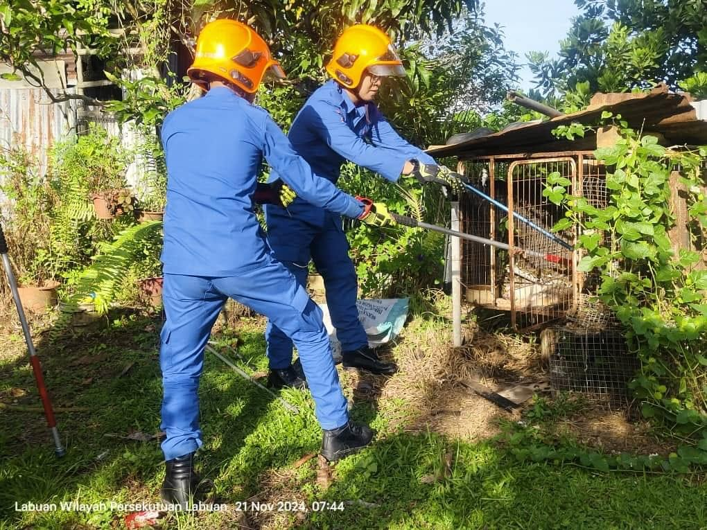

Picture of me on left burning the hornet's nest with my colleague on (right private scoot)

me and my colleague catching snake that has been reported to eat the cats of the reporter
My Timetable
| Day | Time | Activity |
|---|---|---|
| Monday | 8:00 AM - 4:00 PM / 4:00 PM - 12:00 AM | Classes / Work |
| Tuesday | 2:00 PM - 4:00 PM / 4:00 PM - 12:00 AM | Classes / Work |
| Wednesday | 8:00 AM - 4:00 PM / 12:00 PM - 8:00 AM | Classes / Work |
| Thursday | 2:00 PM - 4:00 PM | Classes |
| Friday | 4:00 PM - 12:00 AM | Work |
| Saturday | 5:00 AM - 7:00 AM / 12:00 PM - 5:00 AM | Sports / Entertainment |
| Sunday | 8:00 AM - 4:00 PM | Work / Personal Time |
This is my weekly timetable that outlines my primary activities for each day. I ensure to balance my academic, work as a medic and rescuer, and personal time to stay productive while maintaining a work-life balance.